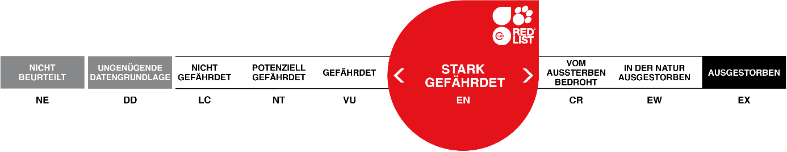

GRAUPAPAGEI
PSITTACUS ERITHACUS
Der Graupapagei ist der grösste Papagei Afrikas und einer der beliebtesten Ziervögel in Europa und Amerika. Bekannt sind sie vor allem für ihre Fähigkeit, Geräusche und Stimmen nachzuahmen, insbesondere die menschliche Sprache. Doch auch wildlebende Graupapageien imitieren Stimmen. So können Forscher zufolge einige Tiere aus der Demokratischen Republik Kongo neun Vogelarten und eine Fledermausart nachahmen.
Besonders laut wird die Geräuschkulisse, wenn Gefahr droht oder sie sich für die Nachtruhe auf einem Baum niederlassen. Dann stossen sie oft laute Schreie und Pfiffe aus. Wird ein Feind gesichtet, so fliegen alle Papageien kreischend vom Baum auf und geben einen ohrenbetäubenden Lärm von sich.
Steckbrief
| Verwandtschaft | Papageien |
|---|---|
| Lebensraum | Wälder im westlichen Zentralafrika |
| Lebenserwartung | 60 Jahre |
| Futter | Früchte und Sämereien |
| Lebensweise | tagaktiv, auf Bäumen, in Schwärmen von ca. 30 Tieren auf Futtersuche, Schlafplätze mit bis zu 10'000 Vögeln |
Verbreitung
Bedrohunsstatus
Karte